1 Padrões Pontuais II
1.1 Exemplo com os dados de dengue em Dourados/MS
Nesta aula serão utilizados os dados da monografia de Isis Rodrigues Reitman, apresentada ao Curso de Geografia da Faculdade de Ciências Humanas da Universidade Federal da Grande Douradosos/MS, em março de 2013. O título da monografia é “DISTRIBUIÇÃO ESPACIAL DOS CASOS DE DENGUE NO PERÍMETRO URBANO DE DOURADOS-MS E SUA RELAÇÃO COM OS FATORES SOCIOAMBIENTAIS E POLÍTICOS”
ATENÇÃO ATENÇÃO ATENÇÃO
Devido a maneira que o Windows acessa as url usando a internet é necessario mudar a opção default dele para que possa usar apropiadamenet os recursos https, ftps, etc… A linha abaixo deve ser utilizanda antes de usar as funções que acessam esse tipo de recurso.
options(download.file.method='libcurl',url.method='libcurl')library(readr)
library(tidyverse)
library(sf)
library(maptools)
library(spatstat)Lendo a tabela da população por setor censitário e baixando os shapes files do contorno e por setor censitário de Dourados/MS
local <- "https://gitlab.procc.fiocruz.br/oswaldo/eco2019/raw/master/dados/"
pop2010 <- read_csv(paste0(local, "pop2010.csv"))
tmpdir <- tempdir()
download.file(paste0(local, "setores_dourados.zip"),
destfile = paste0(tmpdir, "/dourados.zip"))
unzip(zipfile = paste0(tmpdir, "/dourados.zip"), exdir = tmpdir)
dir(tmpdir)
setor <- read_sf(paste0(tmpdir, "/Setor_UTM_SIRGAS.shp"),
crs = 31981)
contorno <- read_sf(paste0(tmpdir, "/contorno.shp"),
crs = 31981)
popsetor <- setor %>%
mutate(idsetor = as.numeric(CD_GEOCODI)) %>%
inner_join(pop2010, by = "idsetor") [1] "contorno.dbf" "contorno.sbn"
[3] "contorno.sbx" "contorno.shp"
[5] "contorno.shx" "dourados.zip"
[7] "Setor_UTM_SIRGAS.dbf" "Setor_UTM_SIRGAS.prj"
[9] "Setor_UTM_SIRGAS.sbn" "Setor_UTM_SIRGAS.sbx"
[11] "Setor_UTM_SIRGAS.shp" "Setor_UTM_SIRGAS.shx" - Lendo e plotando os casos de dengue georreferenciados em Dourados/MS
casos <- read_csv(paste0(local, "dengue_dourados.csv"))
casos.pt <- st_as_sf(casos, coords = c("X", "Y"), crs = 31981)
plot(casos.pt[-3], pch = 19, cex = 0.5) ## remove data
Plotando os casos de dengue segundo o sexo.
plot(casos.pt["CS_SEXO"], pch = 19, cex = 0.5)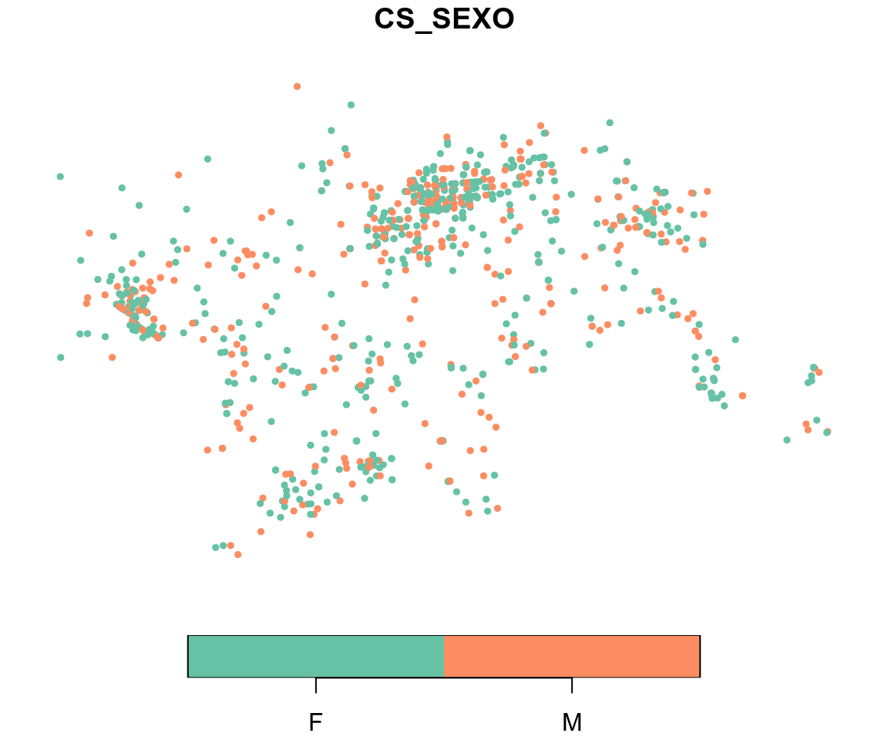
Plotando apenas o contorno de Dourados/MS.
plot(contorno["ID"])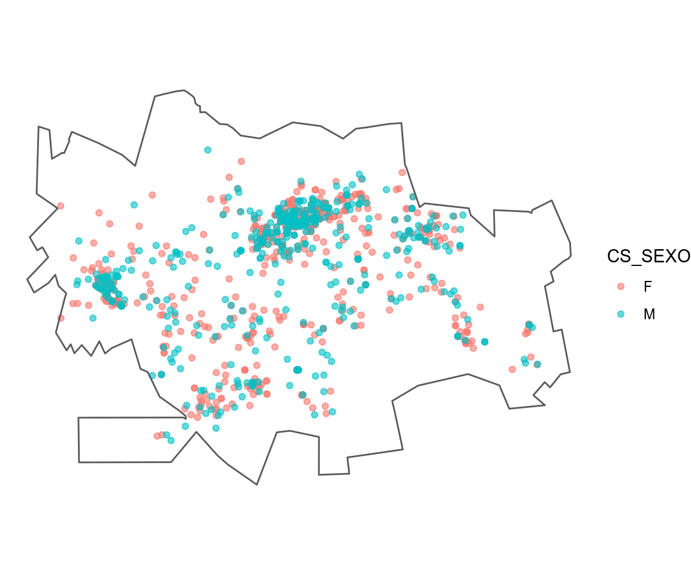
Usando a ggplot() para fazer um gráfico do contorno e dos casos.
ggplot(casos.pt) + geom_sf(aes(color = CS_SEXO, fill = CS_SEXO),
alpha = 0.6) + geom_sf(data = contorno, alpha = 0) +
theme_void()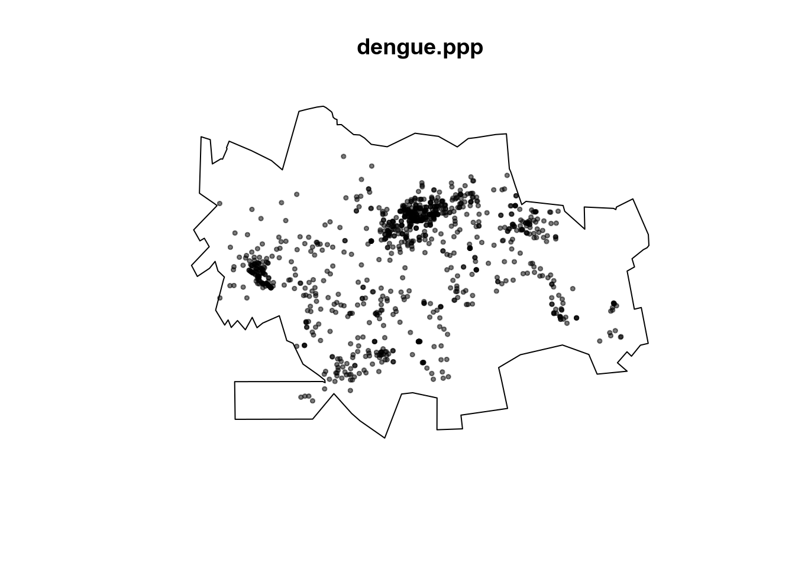
Formatando os pontos que representam os casos de dengue na classe ppp (point pattern)
cont.w <- as.owin(as_Spatial(contorno))
dengue.ppp <- ppp(casos$X, casos$Y, cont.w)
plot(dengue.ppp, pch = 19, cex = 0.5)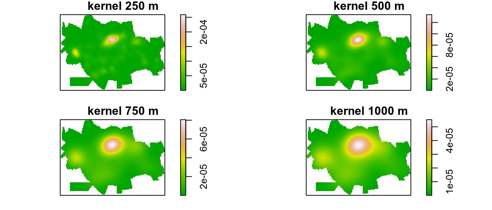
Uma vez que temos o objeto em formato ppp, podemos verificar a melhor largura de banda sugerida por vários métodos disponíveis pela biblioteca spatstat para os casos de Dengue em Dourados/MS.
| Nome | Comando R | Resultado |
|---|---|---|
| Diggle | bw.diggle(dengue.ppp) | 14.1334566 |
| Cronie and van Lieshout’s (CvL) | bw.CvL(dengue.ppp) | 1630.7311348 |
| Scoot | bw.scott(dengue.ppp) | 771.6202375, 467.9059559 |
| likelihood cross-validation | bw.ppl(dengue.ppp) | 178.0476697 |
Existem ainda outros métodos para determinar automaticamente a largura de banda. É possível usa-los para ajudar a escolher o melhor valor, mas é preciso verificar se essa largura de banda apresenta plausibilidade dentro do contexto do estudo.
Fazendo o mapa de kernel dos casos de dengue segundo várias larguras de banda.
par(mfrow = c(2, 2))
plot(density(dengue.ppp, 250, diggle = TRUE), main = "kernel 250 m",
col = terrain.colors(64))
plot(density(dengue.ppp, 500, diggle = TRUE), main = "kernel 500 m",
col = terrain.colors(64))
plot(density(dengue.ppp, 750, diggle = TRUE), main = "kernel 750 m",
col = terrain.colors(64))
plot(density(dengue.ppp, 1000, diggle = TRUE), main = "kernel 1000 m",
col = terrain.colors(64))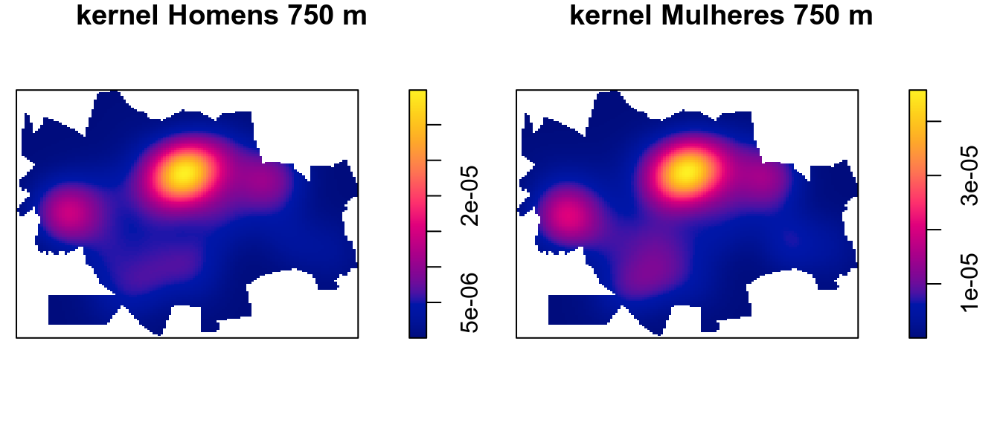
Fazendo o kernel segundo sexo, criando padrões para cada sexo e em seguida gerando um kernel para cada categoria.
masc <- casos %>%
filter(CS_SEXO == "M")
masc.ppp <- ppp(masc$X, masc$Y, cont.w)
fem <- casos %>%
filter(CS_SEXO == "F")
fem.ppp <- ppp(fem$X, fem$Y, cont.w)
D.masc <- density(masc.ppp, 750, diggle = TRUE)
D.fem <- density(fem.ppp, 750, diggle = TRUE)
par(mfrow = c(1, 2))
plot(D.masc, main = "kernel Homens 750 m")
plot(D.fem, main = "kernel Mulheres 750 m")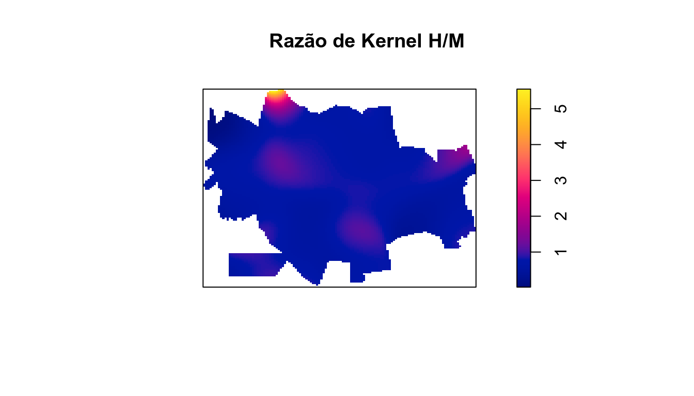
Fazendo a razão de kernel entre os sexos.
D.res <- D.masc
D.res$v <- (D.masc$v/D.fem$v)
plot(D.res, main = "Razão de Kernel H/M")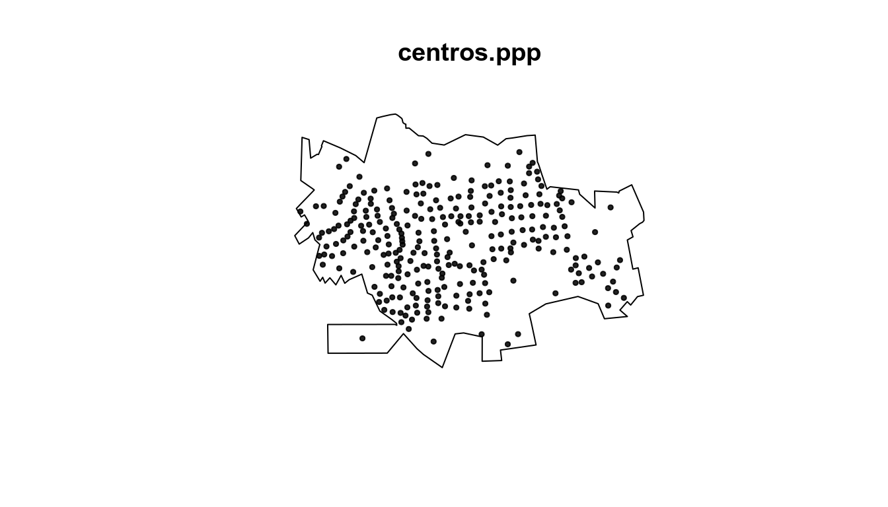
Como podemos observar no kernel acima, não foi detectada variabilidade espacial na razão entre os sexos. Observe o efeito de borda que ocorre no Norte, onde um único indivíduo do sexo masculido é responsável pelo efeito de borda.
Extraindo os centróides dos setores censitários de Dourados/MS.
centros <- st_centroid(st_geometry(popsetor))
centros.tmp <- as.data.frame(as_Spatial(centros))
names(centros.tmp) <- c("X", "Y")
centros.ppp <- ppp(centros.tmp$X, centros.tmp$Y, cont.w)
plot(centros.ppp, pch = 19, cex = 0.5)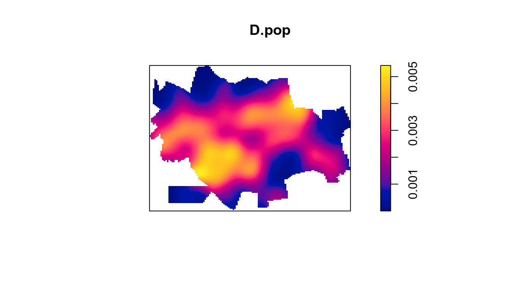
Fazendo o kernel dos pontos dos centróides dos setores censitários de Dourados/MS. Tal distribuição, pode se sugerida como uma proxy da verdadeira distribuição populacional de Dourados/MS
D.pop <- density(centros.ppp, 500, weights = popsetor$pop,
scalekernel = TRUE)
plot(D.pop)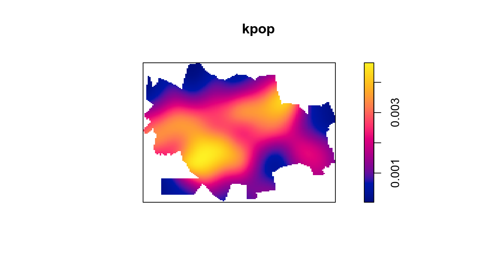
Gerando um kernel de atributo com a população de cada setor censitário. O parâmetro weights nos permite entrar o valor do atributo a ser ponderado. Desta forma é possível gerar um kernel de um valor especificado (atributo).
kpop <- density(centros.ppp, 750, weights = popsetor$pop,
scalekernel = TRUE)
plot(kpop)
Calculando a taxa média de casos (por 1.000 hab) de dengue do município de Dourados/MS
nrow(casos.pt)/sum(popsetor$pop) * 1000[1] 5.853305
Gerando a razão de kernel (casos/população) x 1000
kcasos.b750 <- density(dengue.ppp, 750, diggle = TRUE)
razao <- kcasos.b750
razao$v <- (kcasos.b750$v/kpop$v) * 1000
plot(razao, main = "Razão de kernel casos/população")
contour(razao, add = T, levels = seq(0, 25, by = 5))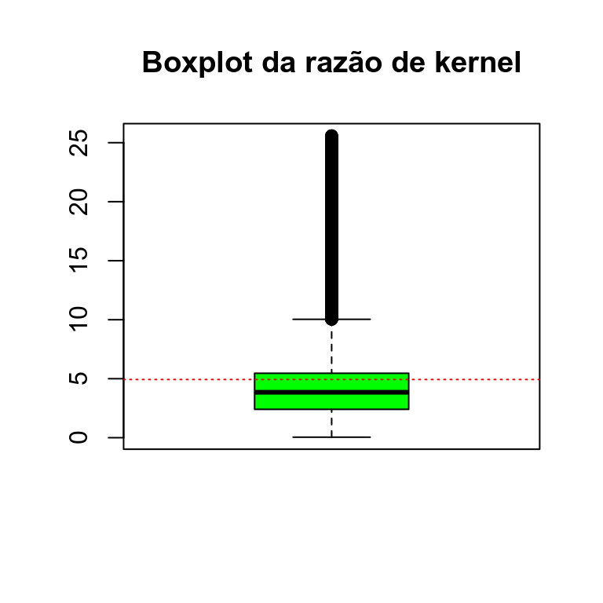
Plotando a distribuição das taxas por dengue estimadas via razão de kernel. É possível verificar que a mediana das razões de kernel é bem próxima a taxa média de casos (por 1.000 hab) em Dourados/MS.
boxplot(as.numeric(razao$v), col = "green", main = "Boxplot da razão de kernel")
abline(h = mean(as.numeric(razao$v), na.rm = T), lty = 3,
col = "red")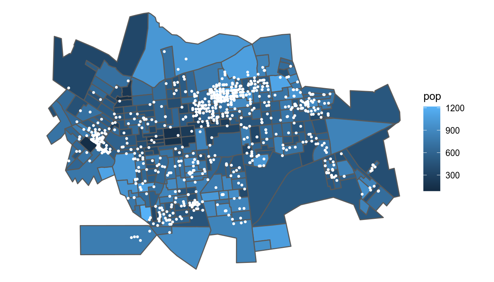
Sobrepondo a malha da população por setores censitários (dados de área) com os pontos de casos de dengue (padrões pontuais)
p1 <- ggplot(popsetor) + geom_sf(aes(fill = pop)) +
geom_sf(data = casos.pt, color = "white", size = 0.7) +
theme_void()
print(p1)
Razão de casos confirmados vs não confirmados
Como verificamos abaixo temos 713 casos confirmados de Dengue e 304 não confirmados , será que existe algum padrão espacial para os casos não confirmados ?
table(casos$CLASSI_FIN == 1)FALSE TRUE 304 713
Para visualizarmos vamos inicialmente criar dois objetos do tipo ppp uma para confirmados e outro para não confirmados.
Confirm <- casos %>%
filter(CLASSI_FIN == 1)
NaoConfirm <- casos %>%
filter(CLASSI_FIN != 1)
Confirm.ppp <- ppp(Confirm$X, Confirm$Y, cont.w)
NaoConfirm.ppp <- ppp(NaoConfirm$X, NaoConfirm$Y, cont.w)plot(st_geometry(contorno))
points(Confirm.ppp, pch = 19, cex = 0.5, col = "red")
points(NaoConfirm, pch = 19, cex = 0.5, col = "blue")
title("Distribuição dos casos Confirmados e Não Confirmados")
legend("topright", legend = c("Confirmados", "Não Confirmados"),
col = c("red", "blue"), pch = 19, cex = 1, title = "Legenda",
bg = "lightblue")
Em seguida vamos fazer um kernel para cada um deles.
D.confirm <- density(Confirm.ppp, 750, diggle = TRUE)
D.naoconfirm <- density(NaoConfirm.ppp, 750, diggle = TRUE)
par(mfrow = c(1, 2)) #,mar=c(0.5,2,1,1.5))
plot(D.confirm, main = "kernel casos Dengue 750 m",
box = FALSE)
plot(D.naoconfirm, main = "kernel casos Descartados 750 m",
box = FALSE)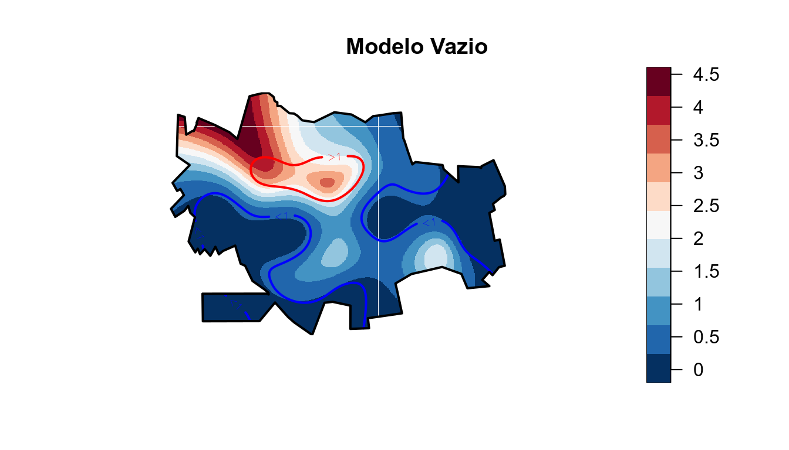
Aparentemente existem diferenças nos padrões dos casos confirmados e descartados de dengue. O próximo passo é fazer uma razão de kernel para averiguar essa diferença de padrões.
raz <- D.confirm
raz$v <- D.confirm$v/D.naoconfirm$v
plot(raz, main = "Razão Dengue Confirmado Vs Não Confirmado",
box = FALSE)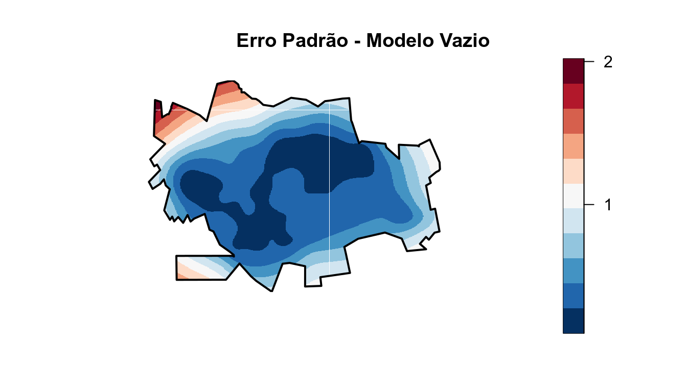
A razão não evidencia grande diferença, por que ?
Qual seria a melhor maneira de evidenciar essa diferença ?
1.2 Modelos Generalizados Aditivos (GAM)
- Um modelo aditivo generalizado (Hastie and Tibishirani, 1990) é um modelo linear generalizado com um preditor linear envolvendo a soma de funções suavizadas das covariáveis + os efeitos fixos das mesmas.
\[\eta = \sum X \beta + f_1(x_{1i}) + f_2(x_{2i}) + \ldots\]
1.3 Modelos Espaciais Generalizados Aditivos
- São modelos aditivos generalizados tendo como um dos preditores o efeito suavizado das componentes espaciais.
\[\eta = \sum X \beta + f_1(x_{1i}) + f_2(x_{2i}) + f_3(latitude_{i}, longitude_{i}) + \ldots\]
Exemplo GAM Dourados - Tipo Caso/Controle
Vamos ajustar um modelo GAM do tipo “caso/controle”, onde casos serão representados pelos casos de dengue confirmados e controles os casos não confirmados.
casos.pt$X <- casos$X
casos.pt$Y <- casos$Y
grade <- expand.grid(X = seq(720900.6, 734155.5, length.out = 150),
Y = seq(7535267.6, 7544897.2, length.out = 100))
suppressMessages(library(mgcv, quietly = TRUE))
mod0 <- gam(CLASSI_FIN == 1 ~ s(X, Y), data = casos.pt,
family = binomial)summary(mod0)Family: binomial Link function: logit
Formula: CLASSI_FIN == 1 ~ s(X, Y)
Parametric coefficients:
Estimate Std. Error z value Pr(>|z|)
(Intercept) 1.00692 0.07945 12.67 <2e-16 ***
—
Signif. codes: 0 ‘’ 0.001 ’’ 0.01 ’’ 0.05 ‘.’ 0.1 ’ ’ 1
Approximate significance of smooth terms:
edf Ref.df Chi.sq p-value
s(X,Y) 21.9 26.24 143.9 <2e-16 ***
—
Signif. codes: 0 ‘’ 0.001 ’’ 0.01 ’’ 0.05 ‘.’ 0.1 ’ ’ 1
R-sq.(adj) = 0.161 Deviance explained = 14.7% UBRE = 0.085615 Scale est. = 1 n = 1017
- Podemos observar que o modelo espacial vazio parace evidenciar que o componente espacial *s(X,Y) é significativo, ou seja, existe indícios que o espaço geográfico está influenciando a variável de desfecho.
Agora vamos verificar a saída gráfica original do modelo.
vis.gam(mod0, main = "Modelo Vazio", plot.type = "contour",
color = "terrain", contour.col = "black", lwd = 2)
- Essa saída não parece ser muito intuitiva, apesar ser possível observarmos as áreas onte apresentão ‘pistas’ de haver um risco maior e as áreas onde estão mais isentas de casos de dengue.
Vamos agora tentar melhorar tal saída gráfica.
suppressMessages(library(splancs, quietly = TRUE))
suppressMessages(library(fields, quietly = TRUE))
TAM <- 400
caixa <- st_bbox(contorno)
grade <- expand.grid(x = seq(caixa[1], caixa[3], length.out = TAM),
y = seq(caixa[2], caixa[4], length.out = TAM))
contorno.xy <- as.data.frame(slot(slot(slot(as_Spatial(contorno),
"polygons")[[1]], "Polygons")[[1]], "coords"))
inside <- in.out(as.matrix(contorno.xy), as.matrix(grade))
outside <- list(x = seq(caixa[1], caixa[3], length.out = TAM),
y = seq(caixa[2], caixa[4], length.out = TAM),
z = matrix(rep(0, TAM^2), ncol = TAM))
outside$z[inside] <- NA
x <- outside$x
y <- outside$y
newgam <- data.frame(X = grade[, 1], Y = grade[, 2])
gg.pred <- predict(mod0, newdata = newgam, type = "terms",
terms = "s(X,Y)", se.fit = T)
gg.pred$fit[inside == F] <- NA
gg.pred$se.fit[inside == F] <- NA
z <- exp(matrix(gg.pred$fit, TAM, TAM))
## a very rough estimate of confidence intervals
z.inf <- exp(gg.pred$fit + (1.96 * gg.pred$se.fit))
z.sup <- exp(gg.pred$fit - (1.96 * gg.pred$se.fit))
z.inf <- matrix(z.inf, TAM, TAM)
z.sup <- matrix(z.sup, TAM, TAM)
cores <- c("#053061", "#2166ac", "#4393c3", "#92c5de",
"#d1e5f0", "#f7f7f7", "#fddbc7", "#f4a582", "#d6604d",
"#b2182b", "#67001f")
split.screen(rbind(c(0, 0.8, 0, 1), c(0.8, 1, 0, 1)))[1] 1 2
screen(1)
image(x, y, z, zlim = range(z, na.rm = T), col = cores,
asp = 1, xlab = "", ylab = "", main = "", axes = F)
# points(den$x_coord, den$y_coord, pch=19,
# col='blue', cex=0.1)
contour(x, y, z.inf, nlevels = 1, add = T, col = "blue",
lwd = 2, levels = 1, cex = 0.1, labels = "<1")
contour(x, y, z.sup, nlevels = 1, add = T, col = "red",
lwd = 2, levels = 1, cex = 0.1, labels = ">1")
splancs::polymap(contorno.xy, add = T, lwd = 2)
screen(2) # The legend
# range(z, na.rm=T) # to make a pretty legend
# ticks <- seq(0,0.5,by=0.2)
ticks <- quantile(na.omit(as.vector(z)), prob = seq(0,
1, by = 1/3))
ticks <- seq(0, 5, by = 0.5)
image.plot(zlim = range(z, na.rm = T), col = cores,
axis.args = list(at = ticks, labels = ticks), legend.only = TRUE,
smallplot = c(0.1, 0.25, 0.15, 0.85), legend.width = 3,
legend.shrink = 0.8, horizontal = F)
title("Modelo Vazio")
Podemos também inspecionar a superfície do erro padrão do modelo.
z <- matrix(gg.pred$se.fit, TAM, TAM)
split.screen(rbind(c(0, 0.8, 0, 1), c(0.8, 1, 0, 1)))[1] 3 4
screen(1)
image(x, y, z, zlim = range(z, na.rm = T), col = cores,
asp = 1, xlab = "", ylab = "", main = "", axes = F)
splancs::polymap(contorno.xy, add = T, lwd = 2)
screen(2) # The legend
# range(z, na.rm=T) # to make a pretty legend
# ticks <- seq(0,0.5,by=0.2)
ticks <- quantile(na.omit(as.vector(z)), prob = seq(0,
1, by = 1/3))
ticks <- seq(0, 10, by = 1)
image.plot(zlim = range(z, na.rm = T), col = cores,
axis.args = list(at = ticks, labels = ticks), legend.only = TRUE,
smallplot = c(0.1, 0.25, 0.15, 0.85), legend.width = 3,
legend.shrink = 0.8, horizontal = F)
title("Erro Padrão - Modelo Vazio")
Note que no centro, onde existe a maior qunatidade de pontos, o erro e bem menor que nas áreas onde existem menos pontos e nas bordas !
Incluindo no modelo a variável sexo.
mod1 <- gam(CLASSI_FIN == 1 ~ CS_SEXO + factor(CS_RACA) +
s(X, Y), data = casos.pt, family = binomial)summary(mod1)Family: binomial Link function: logit
Formula: CLASSI_FIN == 1 ~ CS_SEXO + factor(CS_RACA) + s(X, Y)
Parametric coefficients:
Estimate Std. Error z value Pr(>|z|)
(Intercept) 0.98304 0.10972 8.960 <2e-16 ***
CS_SEXOM -0.02153 0.15296 -0.141 0.8881
factor(CS_RACA)2 -0.61879 0.37459 -1.652 0.0986 .
factor(CS_RACA)3 -0.20412 0.98332 -0.208 0.8356
factor(CS_RACA)4 0.29495 0.20991 1.405 0.1600
factor(CS_RACA)5 -0.56678 1.13614 -0.499 0.6179
factor(CS_RACA)9 0.84691 0.85175 0.994 0.3201
—
Signif. codes: 0 ‘’ 0.001 ’’ 0.01 ’’ 0.05 ‘.’ 0.1 ’ ’ 1
Approximate significance of smooth terms:
edf Ref.df Chi.sq p-value
s(X,Y) 21.85 26.21 143.3 <2e-16 ***
—
Signif. codes: 0 ‘’ 0.001 ’’ 0.01 ’’ 0.05 ‘.’ 0.1 ’ ’ 1
R-sq.(adj) = 0.162 Deviance explained = 15.2% UBRE = 0.094684 Scale est. = 1 n = 1011
Como já visto anteriormente na análise exploratória espacial de pontos, a variável sexo não é significativa significativa.
newgam <- data.frame(X = grade[, 1], Y = grade[, 2],
CS_SEXO = "F", CS_RACA = "1")
gg.pred <- predict(mod1, newdata = newgam, type = "terms",
terms = "s(X,Y)", se.fit = T)
gg.pred$fit[inside == F] <- NA
gg.pred$se.fit[inside == F] <- NA
z <- exp(matrix(gg.pred$fit, TAM, TAM))
## a very rough estimate of confidence intervals
z.inf <- exp(gg.pred$fit + (1.96 * gg.pred$se.fit))
z.sup <- exp(gg.pred$fit - (1.96 * gg.pred$se.fit))
z.inf <- matrix(z.inf, TAM, TAM)
z.sup <- matrix(z.sup, TAM, TAM)
cores <- c("#053061", "#2166ac", "#4393c3", "#92c5de",
"#d1e5f0", "#f7f7f7", "#fddbc7", "#f4a582", "#d6604d",
"#b2182b", "#67001f")
split.screen(rbind(c(0, 0.8, 0, 1), c(0.8, 1, 0, 1)))[1] 5 6
screen(1)
image(x, y, z, zlim = range(z, na.rm = T), col = cores,
asp = 1, xlab = "", ylab = "", main = "", axes = F)
# points(den$x_coord, den$y_coord, pch=19,
# col='blue', cex=0.1)
contour(x, y, z.inf, nlevels = 1, add = T, col = "blue",
lwd = 2, levels = 1, cex = 0.1, labels = "<1")
contour(x, y, z.sup, nlevels = 1, add = T, col = "red",
lwd = 2, levels = 1, cex = 0.1, labels = ">1")
splancs::polymap(contorno.xy, add = T, lwd = 2)
screen(2) # The legend
# range(z, na.rm=T) # to make a pretty legend
# ticks <- seq(0,0.5,by=0.2)
ticks <- quantile(na.omit(as.vector(z)), prob = seq(0,
1, by = 1/3))
ticks <- seq(0, 5, by = 0.5)
image.plot(zlim = range(z, na.rm = T), col = cores,
axis.args = list(at = ticks, labels = ticks), legend.only = TRUE,
smallplot = c(0.1, 0.25, 0.15, 0.85), legend.width = 3,
legend.shrink = 0.8, horizontal = F)
title("Modelo ajustado por Sexo e Raça")
1.4 Bibliografia sugerida
Wood, S.N. (2017) Generalized Additive Models: an introduction with R (2nd edition), CRC.